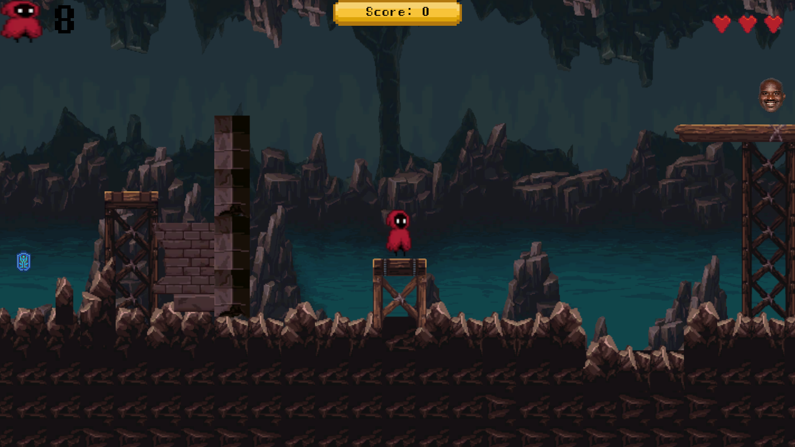

About
I am currently a senior at Michigan State University planning to graduate in Games & Interactive Media. I specialize in game design, but have also worked with graphic design and web design in the past. I love creating things, especially with a touch of humor.
Projects Showcase

- Itch.io builds — A collection of Unity projects ported to WebGL from MI 231.
- Artstation — A collection of graphic design projects from my classes at LCC.
- Web Design — A selection of webpage mockups I've done. All images were created within Adobe Creative Suite products.